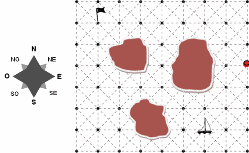
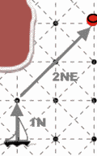
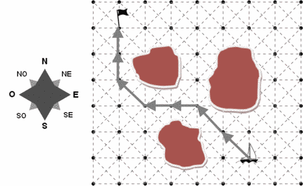

Castor navigue en bateau sur un lac comportant des îles. Son but est de rejoindre le drapeau.
Castor peut programmer le pilote automatique par une suite de commandes de manière à déplacer le bateau de point en point sur la carte. Chaque commande indique un déplacement d'un certain nombre de pas dans l'une des 8 directions possibles. Par exemple, la commande 2 NO effectue un déplacement de 2 pas vers le Nord-Ouest.
|  | Par exemple, le programme à la bouée en 3 pas.  |
Parmi les programmes suivants, lequel permet au bateau d'éviter les îles et de rejoindre le drapeau en un nombre minimum de pas ?
Étudions les programmes :
La bonne réponse est donc 4.
Remarque : on cherchait ici à minimiser le nombre de pas effectués par le bateau, et non pas à minimiser le nombre d'instructions nécessaires pour décrire le déplacement.
Résoudre cet exercice nécessitait de comprendre l'effet de programmes écrits dans un petit langage de programmation ayant une syntaxe précise :
Chaque programme écrit dans ce langage peut être interprété comme la description d'un déplacement.